Samsung Galaxy Phone (Patient Materials)
- General Device Introduction
- Data transfer protocol for patients
- Device How To / setup for wear
- Troubleshooting/FAQ
- Device return
General Device Introduction
You will be provided with a Samsung Galaxy A40 smartphone for the duration of this study. Its purpose is to connect and transfer data between the sensing devices that you wear and the smartphone where they have an associated mobile application. The smartphone will have 7 applications preinstalled and configured for use with the associated sensing devices or during the study, including: VitalPatch, Biovotion, ZK1 YOLI, Dreem, VTT Stress Monitor, CamCog ThinkFast, and IDEA-FAST Support Documentation.
The VTT Stress Monitor App and CamCog record data about phone usage or send prompts to complete short questionnaires daily. Because these applications will send notifications at pre-defined times and are intended to also record patterns of how you use your personal mobile device, it is recommended that they are not used on the Samsung Hub device. Instead, they should be installed on the participants personal mobile smartphone, and if the participant does not have a mobile smartphone or does not consent for these applications to be installed on their personal device, then they should be used on the Samsung device.
How does this device look?
| Samsung A40 Android SmartPhone | Samsung A40 box and charger |
 |
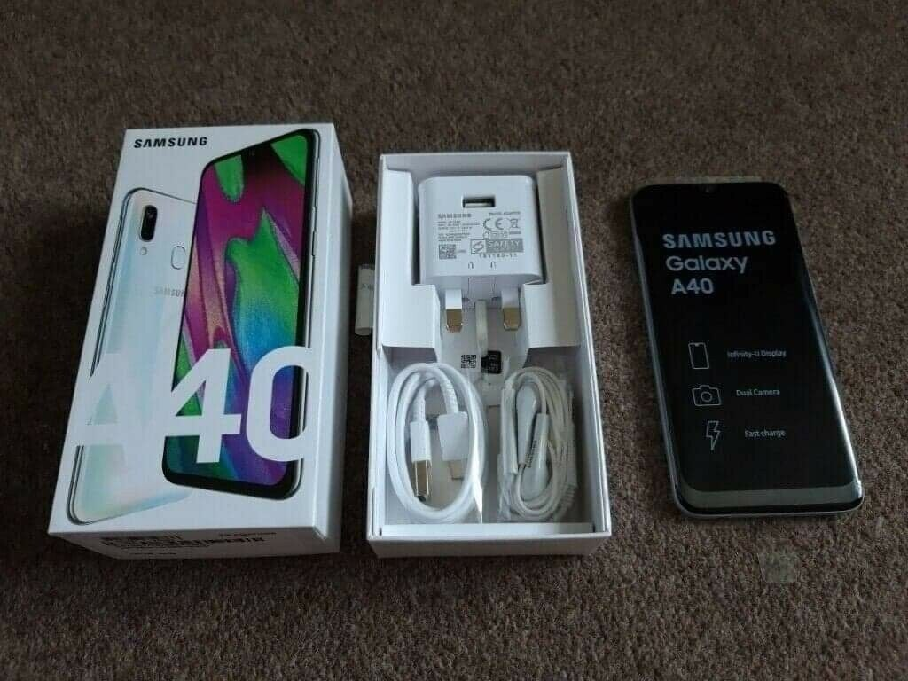 |
| Samsung A40 Android SmartPhone |
|
| Samsung A40 box and charger |
How is it used?
The Samsung A40 smartphone will automatically connect to the preconfigured sensing devices if they are within range (typically a few meters) and transfer data from each using the preinstalled mobile phone applications. Note that not all devices will be connected to the study phones. The information materials for each device contains further details. Once you have an internet connection, some of the sensing device applications will upload the data from the Samsung device to the cloud where researchers of the study can view it. It is important that you carry the Samsung device within two meters of you while wearing any sensing devices and that it is charged each night to ensure it can transfer data.
Depending on your individual study participation pattern, the phone will either connect to the internet through your local WiFi, or it will come equipped with a 4G prepaid card. Please note that if the phone connects to the internet using a 4G prepaid card, we must ask participants not to use the phone for any unnecessary and data-intense online activities, such as watching videos online.
Data transfer protocol for patients
As a patient: do I need to do anything on a daily basis or all N days?
When wearing either the VitalPatch or Biovotion (also known as Everion) you should check the smartphone twice per day – in the morning and before bed – to ensure the associated mobile applications are connected and have transferred data from daily wear of each device.
When you are using either or both the VitalPatch and Biovotion devices, their associated mobile applications will send a persistent notification to the Samsung device (Figure 1-2 below), which indicates the devices connection, battery status, and if data has been uploaded to the cloud.
| 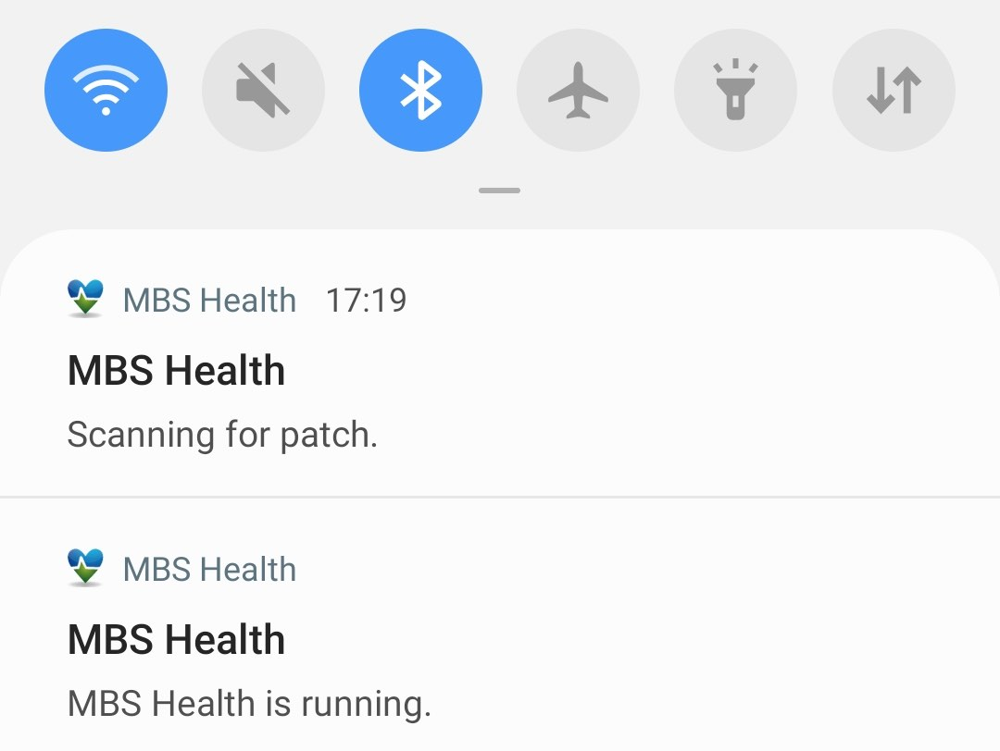 | 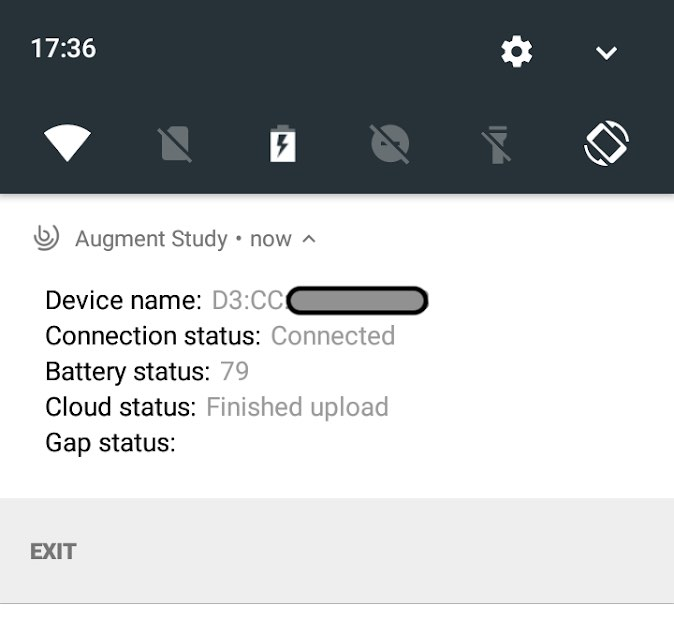 |
| Figure 1: VitalPatch | Figure 2: Biovotion |
| Figure 1: VitalPatch |
| Figure 2: Biovotion |
As a patient: do I need to do anything after each individual period of device / app use ended?
Yes. You must continue carrying the Samsung smartphone as it will transfer data from different devices across the duration of the study, such as VitalPatch or Biovotion.
As a patient: do I need to do anything after my full periods of use of a specific device / app ends?
No. Data will be automatically uploaded from the Samsung device to the cloud. After your full period of use ends in the trial, you must meet your clinician. They will take the Samsung device and retrieve any data remaining that has not been uploaded from it. The device will then be cleaned and prepared to be used by another study participant. Some study centres will arrange with you to return the devices via mail. If so, please follow any additional instructions provided by the study centre and make sure to power off the study phone before sending it off.
Device How To / setup for wear
The Samsung Galaxy A40 is a mobile smartphone for use in the study to store and transfer data from some of the wearable devices that you will be asked to use. The smartphone will be preconfigured to include all the necessary mobile applications for the duration of this study. A separate mobile phone is provided to assure compatibility, to avoid having to ask you to install a lot of apps on your private device and as using multiple Bluetooth devices have an impact on battery duration. Having a unique phone with the sole purpose of recording data will ensure it lasts a full day without impacting your everyday use of your own mobile phone. Additionally, in case you do not want to install the StressMonitor and CamCog apps on your privately owned smartphone, or if you do not own a device that is compatible with these devices (such as not owning an Android device) then you can use these apps on the study phone.
What sort of a device / application is this, what is it for and how does it work?
The Samsung A40 is an Android mobile smartphone that will be connected to your local WiFi (if available) or preconfigured with SIM card for mobile network connectivity to upload data automatically when you use specific sensing devices. Its purpose is to connect and transfer data between the sensing devices that you wear and the smartphone where they have an associated mobile application.
Connecting to your home WiFi
Once you arrive home the provided Samsung smartphone should be connected to your home WiFi. Please obtain the WiFi network name and password before proceeding. If you have not changed these on your home router, then this will be the “SSID” and “Password” written on the router’s label.
Step 1: Unlock phone
Press the button on the right side of the device to illuminate the screen and swipe up. The “Enter Pin” screen will appear as illustrated below. Enter 1034.
Step 2: View WiFi
Swipe down from the top of the screen (where the front camera is located) and you will see a list of icons. If the Wi-Fi button is blue, press and hold the button and the available networks screen will appear (Figure 3). If the Wi-Fi button is grey that means it is turned off. To turn it on tap the icon.
| 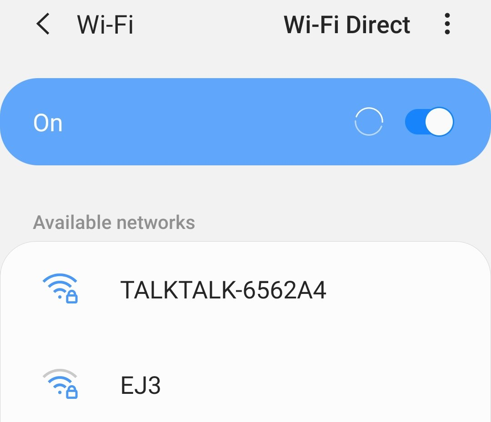 |
| Figure 3: Available networks Wi-Fi |
| Figure 3: Available networks Wi-Fi |
Step 3: Connect
Tap the network that has your home Wi-Fi name (in this example it is EJ5) and then enter the password and tap “Connect” (Figure 4). You will then be taken to a new screen where your Wi-Fi is shown as active (Figure 5).
| 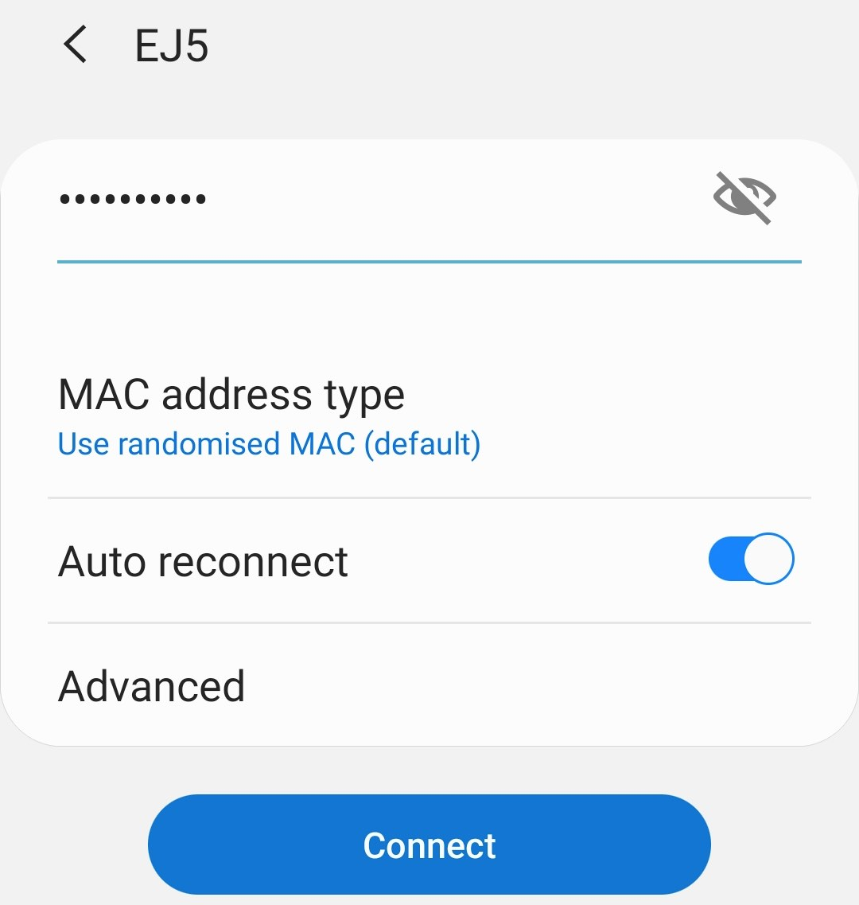 | 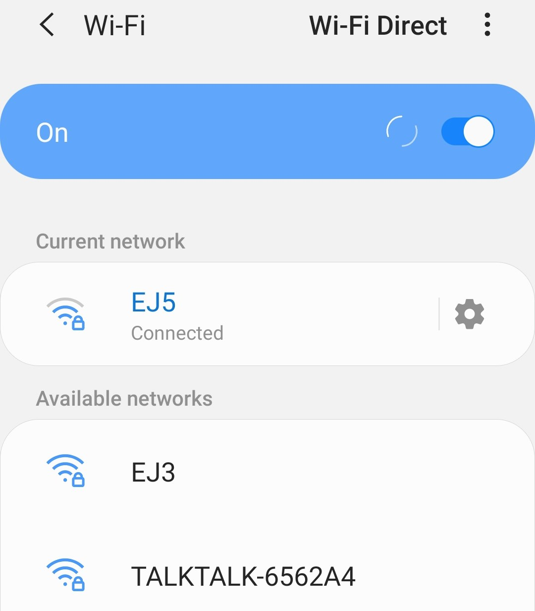 |
| Figure 4: enter your WiFi’s password | Figure 5: the ‘current network’ should be the one you entered. |
| Figure 4: enter your WiFi’s password |
| Figure 5: the ‘current network’ should be the one you entered. |
What will I need to do before I can start using this?
Any account setup required?
No. Your Samsung smartphone will be associated and pre-configured with a study-specific account for the phone itself and for each sensing application that will be used. Should the phone require a PIN to unlock this should be set to 1034.
Needs pairing with other devices?
Yes. Some of the wearable devices you will be asked to use during the study will need to be paired with the study phone. You will find detailed guidance on this in the materials about each wearable. The provided Samsung smartphone should be added to your home WiFi as documented above.
Any configuration / assembly required?
No. There will be no configuration required to use the Samsung A40 device. You should receive it fully charged, but we kindly ask you to make sure that it always remains charged and turned on during the study. The phone should come with all required applications pre-installed. You will also receive a USB-C charger that can be used to charge the phone. Due to organisational reasons for this study, charging equipment may come with either EU or UK mains plug connectors. If needed, an according adapter (converter) plug will be provided to you by at the clinical site.
Troubleshooting/FAQ
The device / app seems to have stopped working: what should I do?
Battery?
We kindly ask you to keep the battery in the smartphone charged and the phone turned on at all times. This can be achieved by charging the phone each night. As this is a new mobile smartphone its battery should last all day. Should you have any specific issues relating to the battery being drained quickly, please hold the power button on the right-hand side of the phone for 3 seconds until a popup menu appears. Please select the “Restart” option. If issues with battery drain persist after restarting the phone, then please get in touch with your study contact.
Connectivity issues?
The Samsung smartphone is provided so that it can connect and transfer data from specific sensing devices over Bluetooth and then use a Wi-Fi connection (when available) to upload the transferred data to the cloud. Some of the sensing devices have their own unique mobile application, which will be listed on your home screen. If you are having specific connectivity issues with those devices, please refer to their documentation (VitalPatch, Dreem, and BioVotion). If the problem continues, please contact your clinician. The smartphone should be connected to your home Wi-Fi as documented above. If no Internet network connect is available through your home network, then the pre-paid SIM card will be used. If your network connectivity problems continue, please contact your clinician.
Restarting Bluetooth
Bluetooth will be enabled when the above sensing applications are installed. However, this can be turned off at any time (such as to reset the connection) by swiping down and tapping the Bluetooth icon. If the Bluetooth icon has a blue background then it is connected, and if it has a grey background then it is disabled. To restart Bluetooth, tap the associated icon until it turns from blue to grey, which will turn the Bluetooth off. Wait 10 seconds and tap it again to turn it back on.
| 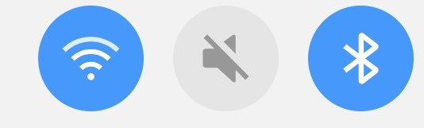 | 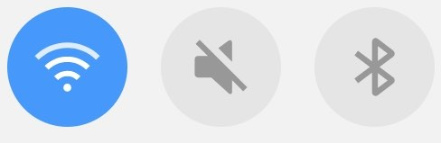 |
| Figure 6: Bluetooth is blue when enabled. | Figure 7: Bluetooth is grey when disabled. |
| Figure 6: Bluetooth is blue when enabled. |
| Figure 7: Bluetooth is grey when disabled. |
Restarting Wi-Fi
Unlock the phone by pressing the power button (located on the right side of the phone), swiping up, and entering 1034 for the PIN. Swipe down from the toolbar and Wi-Fi icon will be listed in blue as enabled (Figure 8). Tap the icon and it will turn grey, which turns the Wi-Fi off (Figure 9). Wait 20 seconds and tap it again to turn it on and it will automatically connect to the previous network.
| 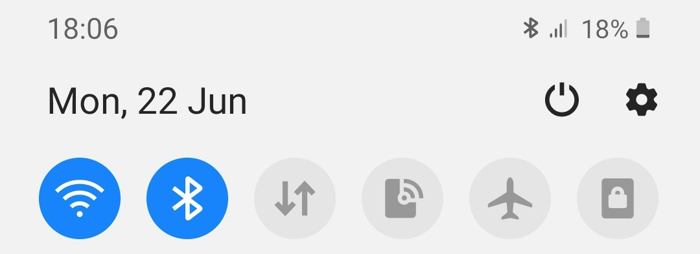 | 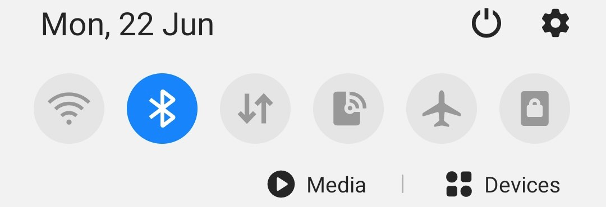 |
| Figure 8: Wi-Fi is blue when enabled. | Figure 9: Wi-Fi is grey when disabled. |
| Figure 8: Wi-Fi is blue when enabled. |
| Figure 9: Wi-Fi is grey when disabled. |
Enabling/Disabling Flight Mode
Flight mode turns off all network connections including Wi-Fi and Bluetooth, which can be useful to reset all connections with the phone without restarting the device. Swipe down from the toolbar and flight mode icon will be listed in grey and appears as a plane:
 |
 |
| Figure 10: Wi-Fi enabled and Flight Mode is off. | Figure 11: Flight Mode is blue when enabled. |
|
| Figure 10: Wi-Fi enabled and Flight Mode is off. |
|
| Figure 11: Flight Mode is blue when enabled. |
Grey indicates that flight mode is disabled. Tap the flight mode icon and it will turn blue to indicate it is activated and the Wi-Fi and Bluetooth connections on the menu bar will turn grey. Wait 20 seconds and tap the flight mode icon again to disable it, which will reactivate the phones Bluetooth and Wi-Fi.
Restarting Phone
Unlock the phone by pressing the power button (located on the right side of the phone), swiping up, and entering 1034 for the PIN. Press and hold the power button until the following three options will appears and tap “Restart” twice and the phone will restart:
 |
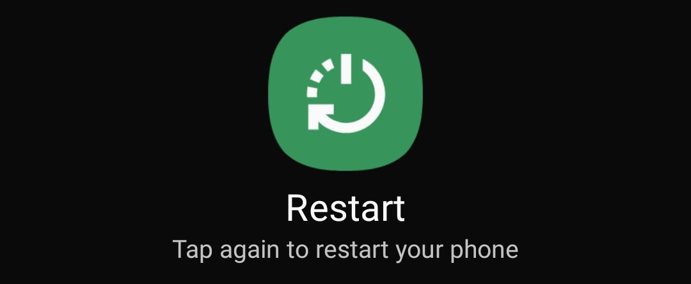 |
| Figure 12: The three options that appear. | Figure 13: Tap Restart twice to restart the phone. |
|
| Figure 12: The three options that appear. |
| Figure 13: Tap Restart twice to restart the phone. |
Using the device / app is uncomfortable to me: what can I do?
Adjust wear style?
We kindly always ask you to keep the phone nearby while participating in the study. However, it can be placed in a purse, pocket, backpack or other pouch.
Adjust usage pattern?
We kindly ask you to keep the study phone with you or nearby at all times. At night, a location in the same room is fine, such as a bedside table. If you feel the device is dirty you can clean it with wet wipes or alcohol rub.
How can I get help with using this?
If you have any other questions or concerns, please contact your local study centre:
| Newcastle upon Tyne, United Kingdom | Rotterdam, Netherlands | Kiel, Germany | Muenster, Germany |
|---|---|---|---|
| Person Name, Centre Name, Location | Person Name, Centre Name, Location | Person Name, Centre Name, Location | Person Name, Centre Name, Location |
Newcastle upon Tyne, United Kingdom
Location
Person Name
Centre Name
Rotterdam, Netherlands
Location
Person Name
Centre Name
Kiel, Germany
Location
Person Name
Centre Name
Muenster, Germany
Location
Person Name
Centre Name
Device return
What do I do when a period of device use is over?
Please store the device in a safe place and make sure it stays clean and dry. Please contact the person that provided you with it to arrange further steps.
Before the device is returned or disposed of: does any data need to be transferred?
No. Data that has been successfully uploaded to the cloud are stored safely. Any data that remains on your Samsung smartphone that has not been uploaded will be manually uploaded once it is returned. Therefore, it is very important that you do not uninstall any applications. All recorded data from the sensor devices will be cleared from the phone before it is handed out to any further study participants.
Do I need to return the device somewhere?
Yes. Please get in touch with your local study centre contact if you are not yet aware of the process for returning your study phone. You will have to return it either in person or by post – subject to further individual arrangement.